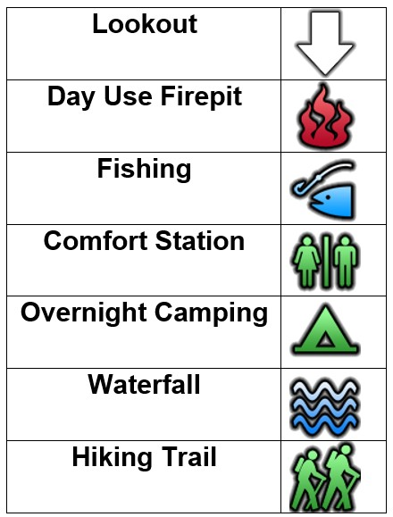

Located minutes outside of Englehart Ontario,Kap-Kig-iwan Provincial Park is a hidden northern gem. Come to see the rushing waterfalls along the Englehart river from lookouts atop the 80m drop to the river valley below. Stay the night in one of two camping areas, or visit for the day and make use of the day use fire pit, prime fishing locations and much more!
